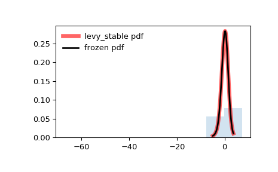

scipy.stats.levy_stable¶
-
scipy.stats.levy_stable= <scipy.stats._continuous_distns.levy_stable_gen object>[source]¶ A Levy-stable continuous random variable.
As an instance of the
rv_continuousclass,levy_stableobject inherits from it a collection of generic methods (see below for the full list), and completes them with details specific for this particular distribution.Notes
The distribution for
levy_stablehas characteristic function:\[\varphi(t, \alpha, \beta, c, \mu) = e^{it\mu -|ct|^{\alpha}(1-i\beta \operatorname{sign}(t)\Phi(\alpha, t))}\]where:
\[\begin{split}\Phi = \begin{cases} \tan \left({\frac {\pi \alpha }{2}}\right)&\alpha \neq 1\\ -{\frac {2}{\pi }}\log |t|&\alpha =1 \end{cases}\end{split}\]The probability density function for
levy_stableis:\[f(x) = \frac{1}{2\pi}\int_{-\infty}^\infty \varphi(t)e^{-ixt}\,dt\]where \(-\infty < t < \infty\). This integral does not have a known closed form.
For evaluation of pdf we use either Zolotarev \(S_0\) parameterization with integration, direct integration of standard parameterization of characteristic function or FFT of characteristic function. If set to other than None and if number of points is greater than
levy_stable.pdf_fft_min_points_threshold(defaults to None) we use FFT otherwise we use one of the other methods.The default method is ‘best’ which uses Zolotarev’s method if alpha = 1 and integration of characteristic function otherwise. The default method can be changed by setting
levy_stable.pdf_default_methodto either ‘zolotarev’, ‘quadrature’ or ‘best’.To increase accuracy of FFT calculation one can specify
levy_stable.pdf_fft_grid_spacing(defaults to 0.001) andpdf_fft_n_points_two_power(defaults to a value that covers the input range * 4). Settingpdf_fft_n_points_two_powerto 16 should be sufficiently accurate in most cases at the expense of CPU time.For evaluation of cdf we use Zolatarev \(S_0\) parameterization with integration or integral of the pdf FFT interpolated spline. The settings affecting FFT calculation are the same as for pdf calculation. Setting the threshold to
None(default) will disable FFT. For cdf calculations the Zolatarev method is superior in accuracy, so FFT is disabled by default.Fitting estimate uses quantile estimation method in [MC]. MLE estimation of parameters in fit method uses this quantile estimate initially. Note that MLE doesn’t always converge if using FFT for pdf calculations; so it’s best that
pdf_fft_min_points_thresholdis left unset.Warning
For pdf calculations implementation of Zolatarev is unstable for values where alpha = 1 and beta != 0. In this case the quadrature method is recommended. FFT calculation is also considered experimental.
For cdf calculations FFT calculation is considered experimental. Use Zolatarev’s method instead (default).
The probability density above is defined in the “standardized” form. To shift and/or scale the distribution use the
locandscaleparameters. Specifically,levy_stable.pdf(x, alpha, beta, loc, scale)is identically equivalent tolevy_stable.pdf(y, alpha, beta) / scalewithy = (x - loc) / scale.References
- MC
McCulloch, J., 1986. Simple consistent estimators of stable distribution parameters. Communications in Statistics - Simulation and Computation 15, 11091136.
- MS
Mittnik, S.T. Rachev, T. Doganoglu, D. Chenyao, 1999. Maximum likelihood estimation of stable Paretian models, Mathematical and Computer Modelling, Volume 29, Issue 10, 1999, Pages 275-293.
- BS
Borak, S., Hardle, W., Rafal, W. 2005. Stable distributions, Economic Risk.
Examples
>>> from scipy.stats import levy_stable >>> import matplotlib.pyplot as plt >>> fig, ax = plt.subplots(1, 1)
Calculate a few first moments:
>>> alpha, beta = 1.8, -0.5 >>> mean, var, skew, kurt = levy_stable.stats(alpha, beta, moments='mvsk')
Display the probability density function (
pdf):>>> x = np.linspace(levy_stable.ppf(0.01, alpha, beta), ... levy_stable.ppf(0.99, alpha, beta), 100) >>> ax.plot(x, levy_stable.pdf(x, alpha, beta), ... 'r-', lw=5, alpha=0.6, label='levy_stable pdf')
Alternatively, the distribution object can be called (as a function) to fix the shape, location and scale parameters. This returns a “frozen” RV object holding the given parameters fixed.
Freeze the distribution and display the frozen
pdf:>>> rv = levy_stable(alpha, beta) >>> ax.plot(x, rv.pdf(x), 'k-', lw=2, label='frozen pdf')
Check accuracy of
cdfandppf:>>> vals = levy_stable.ppf([0.001, 0.5, 0.999], alpha, beta) >>> np.allclose([0.001, 0.5, 0.999], levy_stable.cdf(vals, alpha, beta)) True
Generate random numbers:
>>> r = levy_stable.rvs(alpha, beta, size=1000)
And compare the histogram:
>>> ax.hist(r, density=True, histtype='stepfilled', alpha=0.2) >>> ax.legend(loc='best', frameon=False) >>> plt.show()
Methods
rvs(alpha, beta, loc=0, scale=1, size=1, random_state=None)
Random variates.
pdf(x, alpha, beta, loc=0, scale=1)
Probability density function.
logpdf(x, alpha, beta, loc=0, scale=1)
Log of the probability density function.
cdf(x, alpha, beta, loc=0, scale=1)
Cumulative distribution function.
logcdf(x, alpha, beta, loc=0, scale=1)
Log of the cumulative distribution function.
sf(x, alpha, beta, loc=0, scale=1)
Survival function (also defined as
1 - cdf, but sf is sometimes more accurate).logsf(x, alpha, beta, loc=0, scale=1)
Log of the survival function.
ppf(q, alpha, beta, loc=0, scale=1)
Percent point function (inverse of
cdf— percentiles).isf(q, alpha, beta, loc=0, scale=1)
Inverse survival function (inverse of
sf).moment(n, alpha, beta, loc=0, scale=1)
Non-central moment of order n
stats(alpha, beta, loc=0, scale=1, moments=’mv’)
Mean(‘m’), variance(‘v’), skew(‘s’), and/or kurtosis(‘k’).
entropy(alpha, beta, loc=0, scale=1)
(Differential) entropy of the RV.
fit(data, alpha, beta, loc=0, scale=1)
Parameter estimates for generic data.
expect(func, args=(alpha, beta), loc=0, scale=1, lb=None, ub=None, conditional=False, **kwds)
Expected value of a function (of one argument) with respect to the distribution.
median(alpha, beta, loc=0, scale=1)
Median of the distribution.
mean(alpha, beta, loc=0, scale=1)
Mean of the distribution.
var(alpha, beta, loc=0, scale=1)
Variance of the distribution.
std(alpha, beta, loc=0, scale=1)
Standard deviation of the distribution.
interval(alpha, alpha, beta, loc=0, scale=1)
Endpoints of the range that contains alpha percent of the distribution